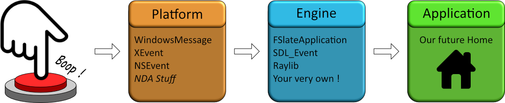

UI Engineering Toolbox - The Command Pattern
Spending time helping people on the internet, there's some very recurrent issues I see people hit. One of them is managing the user inputs and making sure interaction with their UI is coherent throughout. In this article I'm going to share a pattern I like to use to minimize time spent debugging faulty UI interactions, maximize user understanding of what they can do, and help portability to various input devices. Shall we go ?
The Problem
Alright ! What's the issue ? Why can't you just bind "LeftMouseClick" and be done with it ? Well, although it might be fast, and every UI package have those events readily available, once you ramp up your production and have those events spread everywhere you'll probably encounter issues... What kind ?
- I clicked X expecting Y but Z happened
- I clicked X but nothing happened (a classic)
- I want to convey something to the user but I have no idea how to plug that
- I don't want this to be a click anymore but a keyboard shortcut
- I want this to be a held input now... (a designer favorite)
- I don't want this to be a held input anymore (no correlation with the previous point)
- I need to port this to gamepad but I have no support for that and 2 weeks left... (a free cursor is born, an engineer weep)
If you vibe with any of those, well you're in luck ! We're going to see a little pattern that aims to add structure and semantics to your input stack. I've been actively using it in my current game for nice results, and hopefully you'll gain some insight on how to approach those problems !
As a disclaimer, I'll be trying to keep everything here relatively engine agnostic but if some unreal idioms slips in hopefully they're inconsequential !
Ok, let's start. What's our hook ? It's a pretty big problem so how do we even start tackling this ? Well I propose we go from the very top, the heck is an input ?!
Anatomy of a Finger Press
Keyboard ! Gamepads ! Touch Screens ! A VR headset grafted to our spines while our bodies are rotting away ! Many ways we can press and prob to impose our will on the digital world. But to what end ? Well depending on the active window on your screen a lot of ends ! Maybe a character is moving, a button lights up, a glyph appears, your bank account gets depleted a little bit. Well, hopefully that was your will... Anyway, there's stuff happening, and this stuff happened because an electrical signal went all the way from the input device, to the motherboard, to the OS, to the application, to whatever state was on there that triggered some code to execute ! If you're building a UI where the user can be productive with, the code that executes shouldn't be too surprising. In fact, you can argue that the most productive UI's give you no surprises and is infinitely fast !
So how do we reduce surprises ? First we need to not be surprised ourselves, let's get an overview of the layers.

As stated, when the user does something, an electrical signal is sent. At that point we're at the bottom of the abstraction tower, the very beginning. That signal is then sent from the hardware to your computer motherboard (or equivalent), which is then transferred to the operating system (windows, macos, playstation etc...), which translates it in a useful way before sending it, usually in the form of a message, to whatever software you have running. At that point it's taken by your "platform layer", noted as Engine here. It's a small insulation layer that transforms the OS message into something more palatable for the application layer, usually trying to transform discrete events into something more tractable, abstracting raw inputs into "controllers", mapping inputs to specific users, so on and so forth.
Finally the Application layer, this is where we'll be building our input house. When you work on a new tech, the layers before that are already figured out for you (unless you spin up own but this is out of scope for this article).
So, what exactly should we expect from this Engine layer ? First of all in terms of events :
- KeyDown / KeyUp : All keys, no modifiers, scan codes and translated key
- Mouse : Move delta, button down/up, wheel scrolling delta, mouse capture state
- Gamepad inputs : Analog, gamepad type
- Touch inputs : Finger count, position, finger index continuity
- Char Events : Actual character input, takes keyboard layout and modifier keys into account
On top of this, a functional UI engine will give you access those states :
- Focus/Hover stack : Which chain of widgets events are currently bubbling through, more on this later
- Binding layer : A separation between the physical input and the developer intents, can usually be set by user
- Menu Stack : Might or might not be separated from the focus stack, whatever input sink is opened at any time (Fullscreen menu, movable popup, occluding popup, etc...)
- Temporal data : Dragging state,
What I'm delineating here is that there's two main components to any user input, the punctual event generated by the user (mouse move, joystick shift, key pressed or released), and the context that input happened in (what's under the cursor, what element is focused, what's the application state)
To write a successful application layer, you'll first need to fully understand (and potentially peel back) those abstractions you're building on top of.